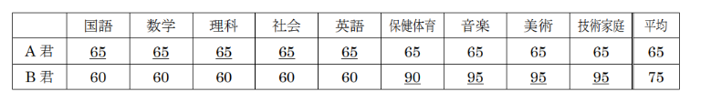
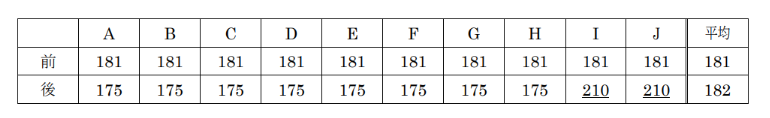

講義ノート第9回
目次に戻る
次の各分析について、常に正しいと言えるものは「〇」、常に正しいとは言えないものについては「×」を答えよ。
分析①：40 名のクラスで試験を実施したところ、平均点が 49 点であった。いま、点数区分を「0 から19 点」「20 から 39 点」「40 から 59 点」「60 から 79 点」「80 から 100 点」に区切るとすれば、「40 から 59 点」に属する学生が最も多い。
分析①
分析①：×（常に正しいとは言えない）。\(20\) 名が \(0\) 点、\(19\) 名が \(100\) 点。\(1\) 名が \(60\) 点であれば、合計は
\( 20 \times 0 + 19 \times 100 + 1 \times 60 = 1960 \) 点
平均点は \( \frac{1960}{40} = 49 \) 点。「\(0\) から \(19\) 点」の学生が一番多いです。
分析②：40 名のクラスで試験が実施され、自分の成績は 65 点、クラスの平均点は 62 点であった。よって、自分は（成績順位において）上位半分に含まれるといえる。
分析②
分析②： ×（常に正しいとは言えない）。 中央値以上の成績であれば上位半分に含まれるが、平均値以上であっても上位半分に含まれるとは限らないです。
分析③：情報 3 の中間試験の成績が 65 点（クラス平均 50 点）であった。その後、情報 3 の前期末試験の成績が 75 点（クラス平均 40 点）であった。これより、情報 3 の成績順位は、中間試験のときよりも、前期末試験のほうが向上しているはずだ。
分析③
分析③：×（常に正しいとは言えない）。\(40\) 名中 \(30\) 名が \(80\) 点、\(6\) 名が \(2\) 点、\(3\) 名が \(1\) 点、自分が \(65\) 点で平均は
\( \frac{30 \times 80 + 6 \times 2 + 3 \times 1 + 65}{40} = 60.2 \) 点
の場合、クラス上位半分には含まれないです。
分析④：中学 1 年生の学年末の 9 科目平均が 79 点であった。そして、2 年生の学年末の 9 科目平均は 86点であった。これより、少なくとも 1 年次よりも 2 年次のほうが学年順位があがっているはずだ。
分析④
分析⑤：A 君の 9 科目平均は 65 点であった。また、B 君の 9 科目平均は 70 点であった。これより、B君は、A 君よりも点数が高かった科目数が多いはずだ。
分析⑤

分析⑥：40 名のクラスで試験を実施したところ、平均が 62 点であった。クラス全員の試験点数を合計すると 2480 点となるはずだ。
分析⑥
分析⑦：10 人の高血圧患者に対して、血圧を下げる新薬 X を投与したところ、10 名についての最高血圧を平均した値が 181 から 182 になった。これより、新薬 X には最高血圧を下げる効果は期待できないといえる。
分析⑦
×（常に正しいとは言えない）。
以下のように 10 人中 8 人は最高血圧が下がっているというケースも考えられます。

分析⑧：高専 3 年生の成績はクラス 2 位であった。また、高専 4 年生の成績はクラス 3 位であった。よって、3 年と 4 年の両方の成績を総合した順位では 1 位になる可能性はない。（3 年と 4 年でクラスのメンバーは同じものとする）
分析⑧
×（常に正しいとは言えない）。3 年で 1 位だった学生が 4 年で 40 位、3 年で 39 位と 40 位だった学生が、1 位と 2 位になった場合、この学生が 3 年と 4 年の両方の成績を総合した順位では 1 位になる可能性があります。
A 君は平日に新聞配達のバイトをしている。担当の配達先は 100 件となっている。今週の月曜は 50 部/時間、火曜は 55 部/時間、水曜は 60 部/時間、木曜は 30 部/時間（大雨だった）、金曜は 45 部/時間で配達ができた。5 日間での平均配達速度（部/時間）を求めるための式を答えよ。
A君が平日に配達した新聞の平均配達速度を求めるためには、まず5日間の配達速度を合計し、その合計を5で割ります。
具体的には、以下の計算式を用います
\[
\text{平均配達速度} = \frac{50 + 55 + 60 + 30 + 45}{5}
\]
ここで、
- 月曜の配達速度: 50 部/時間
- 火曜の配達速度: 55 部/時間
- 水曜の配達速度: 60 部/時間
- 木曜の配達速度: 30 部/時間（大雨のため遅かった）
- 金曜の配達速度: 45 部/時間
これらを合計して5で割ることで、5日間の平均配達速度を求めることができます。
公大製作所の人事部長は、会社説明会で就活生に向けて次のような話をした。2020 年から2022 年にかけての公大製作所の「平均売上成長率」を幾何平均によって求めよ。
我が公大製作所は、新型コロナウイルスの影響で 2020 年度には売上が前年比 40%になるという非常に大きな危機に直面しました。しかし、社員一同の懸命な努力の結果、2021 年度の売上は前年比 110%、そして 2022 年度には前年比 200%という飛躍的な回復と成長を遂げました。厳しい時期ではありましたが、平均してみれば (40 + 110 + 200) / 3 ≒ 116、つまり、年間平均 16%ずつの売上成長が見られました。この結果は、まさに「困難を乗り越えて強くなる」という言葉通りです。
公大製作所の「平均売上成長率」を幾何平均によって求める方法を解説します。
売上の成長率をパーセンテージから小数に変換して計算します。
- 2020年度の成長率: \(0.40\) （前年比40%）
- 2021年度の成長率: \(1.10\) （前年比110%）
- 2022年度の成長率: \(2.00\) （前年比200%）
幾何平均は次の式で求めます：
\[
\text{幾何平均} = \left(0.40 \times 1.10 \times 2.00\right)^{\frac{1}{3}}
\]
計算を行うと：
\[
\left(0.40 \times 1.10 \times 2.00\right)^{\frac{1}{3}} \approx 0.958
\]
これをパーセンテージに戻すと、平均売上成長率は約 \(95.8%\) となり、前年と比べて平均すると約 \(4.2%\) の減少（ \(-4.2%\) ）となります。
したがって、幾何平均による「平均売上成長率」は \(-4.2%\) です。
講義ノート第11回
目次に戻る
通信の文脈において「プロトコル」とは何を意味するか。最も適切なものを答えよ。
① 通信機器のハードウェア仕様を定義するもの
② 通信のためのデータ圧縮方式
③ データの送受信におけるルールや手順を定義するもの
④ ネットワークトポロジを決定するためのルーティングアルゴリズム
⑤ インターネット上でドメイン名を IP アドレスに変換するシステム
ウェブページを記述するために用いられる HTML や、文書の構造や見栄えを指定するためのXML などが属する「文章に対して意味付けや見た目の情報を付加するための言語」の総称は何か。最も適切なものを記号で答えよ。
① スクリプト言語
② マークアップ言語
③ アセンブリ言語
④ 機械語
⑤ メイクアップ言語
⑥ プログラミング言語
⑦ マークダウン言語
① スクリプト言語: 動的に動作するプログラムを書くための言語です。JavaScriptやPythonが例です。
② マークアップ言語: 文書の構造や見た目を指定するための言語です。HTMLやXMLがこれに含まれます。
③ アセンブリ言語: 機械語に非常に近い低レベルのプログラミング言語で、特定のハードウェアに依存します。
④ 機械語: コンピュータのCPUが直接解釈して実行できる命令コードです。最も低レベルの言語です。
⑤ メイクアップ言語: 実際には存在しない言葉です。
⑥ プログラミング言語: プログラムを記述するための言語の総称で、JavaやC++などが含まれます。
⑦ マークダウン言語: テキストをシンプルに書式設定するための軽量マークアップ言語で、Markdownが代表例です。
Windows 環境において標準的に使われる改行コードはどれか（情報 1 と情報 2 の復習）
① CR ② LF
③ CR＋LF ④ < br >
① CR: キャリッジリターン（Carriage Return）の略で、古いタイプライターでキャリッジ（印字位置）を行の先頭に戻す制御文字を指します。
② LF: ラインフィード（Line Feed）の略で、次の行に移動する制御文字です。Unix系OS（LinuxやMacOSなど）で標準的に使われます。
③ CR＋LF: キャリッジリターンとラインフィードの組み合わせで、Windows環境で標準的に使われる改行コードです。キャリッジを行の先頭に戻し、次の行に移動する動作をします。
④ <br>: HTMLで使われる改行タグで、ウェブページのテキストにおいて改行を挿入するために使用されます。
HTML において < p > タグが表すものは何か。最も適切なものを記号で答えよ。
① 見出し（Header）
② 段落（Paragraph）
③ 本文（Body）
④ 区分（Division）
⑤ ハイパーリンク（Anchor）
⑥ 画像（Image）
① 見出し（Header）: HTMLでは、<h1>から<h6>までのタグを使用して見出しを定義します。
② 段落（Paragraph）: <p> タグは段落を定義するために使用されます。通常、段落はテキストのまとまりを示します。
③ 本文（Body）: <body> タグはHTML文書の本文を示します。このタグの中に、文書の内容が含まれます。
④ 区分（Division）: <div> タグは文書内のセクションや区分を定義するために使用されます。
⑤ ハイパーリンク（Anchor）: <a> タグはハイパーリンクを定義します。リンク先のURLを指定します。
⑥ 画像（Image）: <img> タグは画像を表示するために使用されます。画像のソースURLを指定します。
16 進カラーコードの「#ff00ff」は何色を表すか。最も適切なものを選び記号で答えよ。
① マゼンタ ② イエロー
③ シアン ④ レッド
⑤ ブルー ⑥ グリーン
#ff00ffはマゼンタ色です。この色は赤（ff）と青（ff）が最大値で、緑（00）が最小値のため、マゼンタ色になります。
他の色とそのカラーコードは次の通りです：
#ff0000: レッド - 赤のみが最大値
#00ff00: グリーン - 緑のみが最大値
#0000ff: ブルー - 青のみが最大値
#ffff00: イエロー - 赤と緑が最大値で、青が最小値
#00ffff: シアン - 緑と青が最大値で、赤が最小値
#ff00ff: マゼンタ - 赤と青が最大値で、緑が最小値
CSS において、ルート要素（通常は HTML 要素）のフォントサイズを基準に、相対的なサイズを設定したい場合に使用すべき単位はどれか。
① px ② %
③ em ④ rem
⑤ pt ⑥ pc ⑦ 寸
① px: ピクセル単位。固定の絶対サイズを指定します。
② %: パーセンテージ単位。親要素のサイズに対する相対的なサイズを指定します。
③ em: 親要素のフォントサイズに対する相対的なサイズを指定します。
④ rem: ルート要素（通常はHTML要素）のフォントサイズに対する相対的なサイズを指定します。
⑤ pt: ポイント単位。印刷業界で使われる絶対的なサイズを指定します。
⑥ pc: パイカ単位。ポイントの12分の1で、印刷業界で使われる絶対的なサイズを指定します。
⑦ 寸: 中国の古い長さの単位で、CSSではほとんど使用されません。
ルート要素のフォントサイズを基準にした相対的なサイズ指定には④ remが適しています。